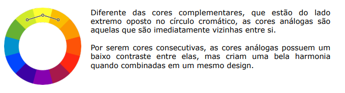

Paleta de Cores
Uma paleta de cores deve conter de três a cinco cores,e sempre deve partir da cor principal que será usada.
Cores Complementares
Cores Análogas

Cores análogas mais uma complementar
Cores análogas relacionadas
Cores intercaladas
Cores triádicas
Cores em quadrado
Cores tetrádicas
Monocromia
Pagina Inicial